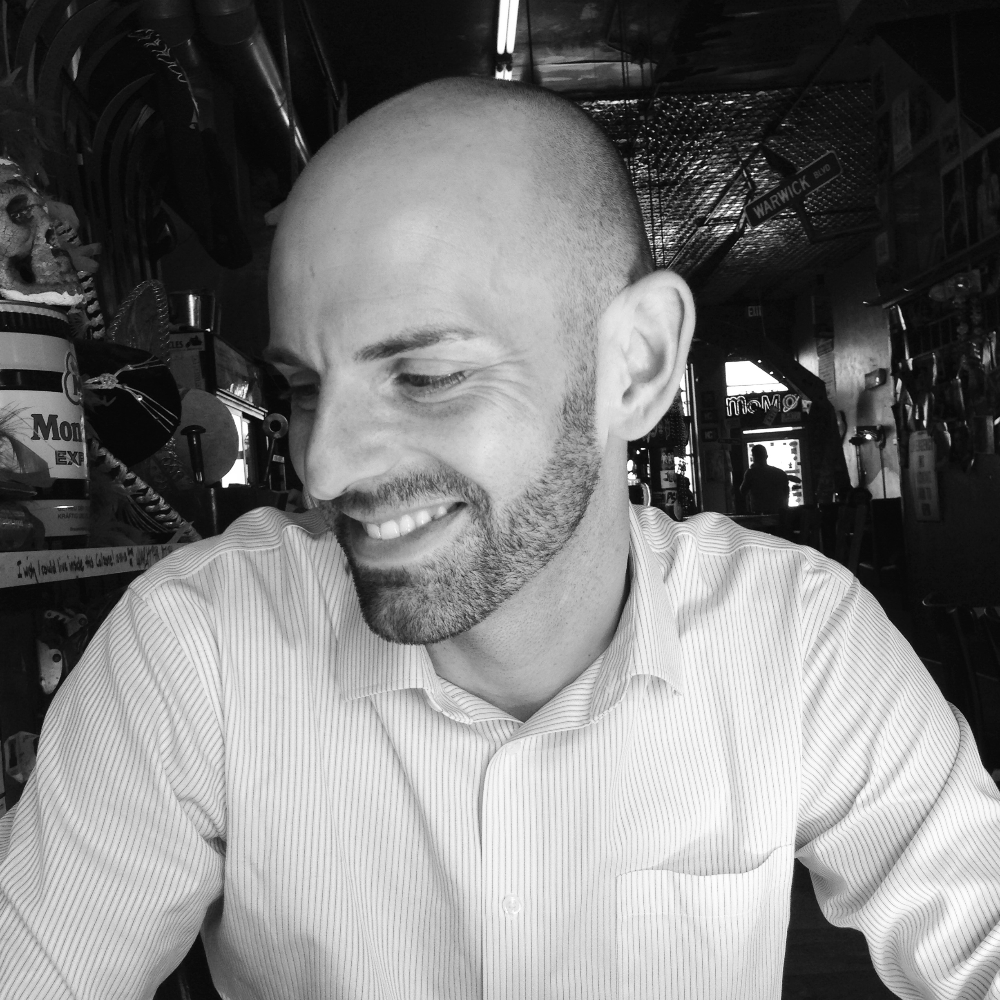

About Me
Hi there! My name is Ryan Leis. I was born January 31, 1983. I grew up in Derby, Kansas and then graduated from Kansas State University in 2005 with a degree in Financial Planning. I originally wanted to be a pilot and I did get my private pilot license. I still have a strong interest in all things related to aviation. In my free time, I like to hang with friends, cook, run, take photographs and travel. I love to travel and experience other countries and cultures. A few of my favorite places that I’ve been to are Chile, Germany, Netherlands and New York, but there are so many places that I still haven’t had a chance to visit. Eventually, I would like to have a career that enables me to live abroad in South America or Europe.
I also like to learn new languages when I have time. I’m not really fluent in anything except English, but I know enough German and Spanish to get myself in trouble! I’m currently trying to learn more Spanish so that I can interact with more people when I travel to Spanish-speaking countries. In high school, I took four years of German and really enjoyed it! I still keep up with it as much as I can, but there is only so much time in a day!
Connect with Me